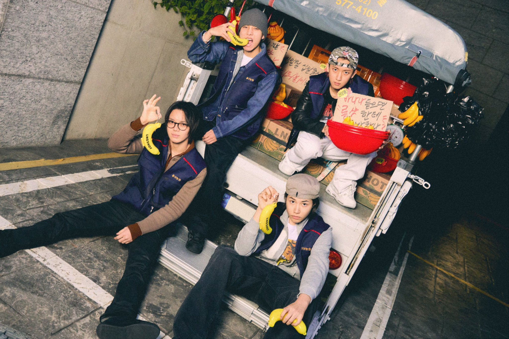
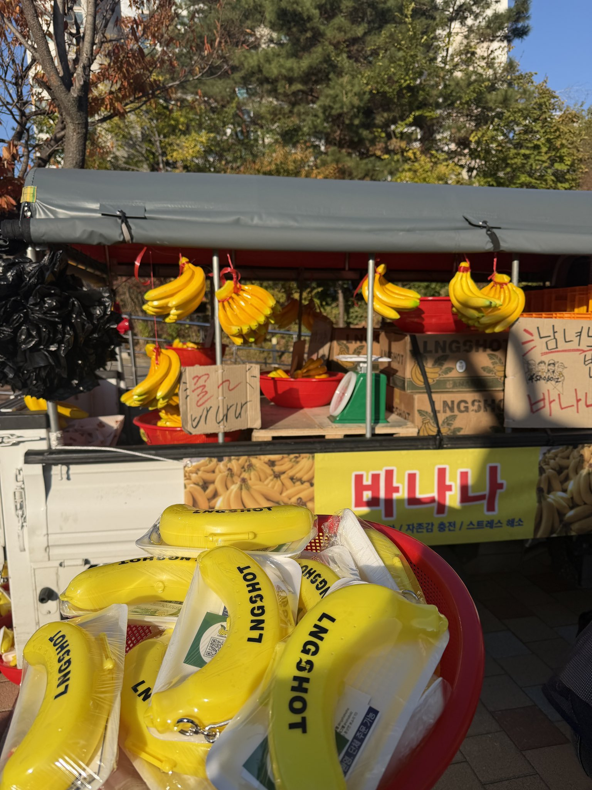

Menjelang comeback, LNGSHOT memilih cara promosi yang tak biasa. Tanpa papan reklame besar atau toko pop-up, mereka mengoperasikan truk penjual pisang yang berkeliling Seoul untuk memperkenalkan lagu utama “Bananas” dari EP terbaru S.W.I.S.H., yang dirilis 10 November 2026.

Menjelang comeback lewat EP S.W.I.S.H. pada 10 November, promosi lagu utama “Bananas” tidak berhenti di truk penjual pisang yang berkeliling Seoul. LNGSHOT juga memasang banner promosi bertema “LNGSHOT Farm” di sejumlah titik di ibu kota Korea Selatan.

Kampanye ini mulai muncul di akun resmi LNGSHOT pada 4 November. Mereka mengunggah kalimat-kalimat yang memancing rasa penasaran, seperti pengumuman bahwa pisang mulai dijual hari itu, berkeliling ke seluruh penjuru Seoul, dan “pisang madu” dengan tingkat kemanisan 1.110 persen. Tak lama kemudian, truknya benar-benar terlihat melintas di sejumlah kawasan, termasuk Gangnam. Di bagian luarnya terpampang tulisan bahwa satu tandan pisang dijual seharga 1.110 won.
Harga itu ternyata petunjuk tanggal comeback. Angka 1110 merujuk pada 10 November, atau 11.10 dalam format tanggal yang dipakai di kampanye ini.
Aksi ini terasa pas dengan citra LNGSHOT yang tampil unik cukup berbeda dari yang lain. Judul lagu, harga, hingga pesan di truk saling terhubung, sehingga fans yang jeli bisa menebak jadwal comeback sebelum diumumkan lebih jauh.